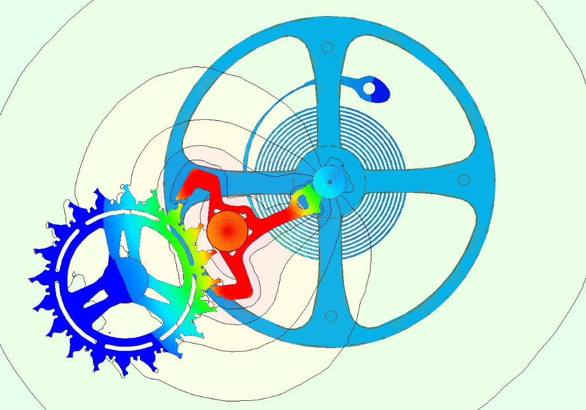

R&D Multiphysics Modeling (Master Thesis)
Patek Philippe • 6 months (2025)
R&D thesis on multiphysics finite element analysis (FEA) for high‑precision watch mechanisms. Focus on electrostatic interactions and their impact on the dynamics and reliability of complex micro‑mechanical assemblies.
- • Ansys multiphysics: mechanical–electrostatic coupling + thermo‑mechanical effects.
- • V&V lab protocols correlating experiments with simulations.
- • Silinvar value‑chain audit: process risks + mitigations.
- • IP study: IP reviews + Freedom‑to‑Operate (FTO) assessment.
- • Reference report on electrostatic risks + design guidelines (6/6).

FEA
Electrostatics
More details